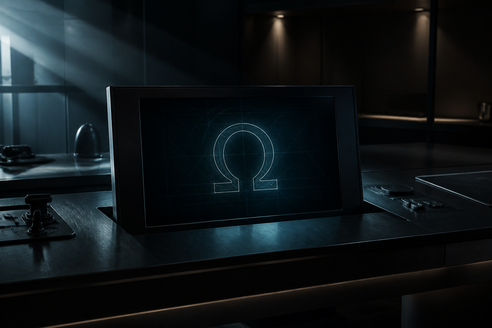

Core · Tier Zero
Tier Zero Agent Runtime
Six-stage local pipeline with handoffs, memory, tool receipts, and QA gates.
Boundary: deterministic orchestration (+ optional Ollama) — not six cloud LLMs.

ForgeFront Systems · Local Content Operations OS
The command console that turns approved source into evidence-linked content — without renting your IP to the cloud.
One workbench. Discrete tools underneath. Provenance on every claim. Authority stays with the operator on every publish.
Positioning
Cloud chat toys spit words. Omega ships packets you can defend.
Creators and small studios are drowning in notes, calls, and drafts — then pasting them into generic generators that invent claims, erase provenance, and lock work behind someone else’s account.
WAKE Engine Omega is the local command console: ingest approved source, run Tier Zero agents, build a content cluster, export Markdown and JSON, stage publish work for the human who owns the brand.
That last part is the close — not a weakness. Buyers who got burned by “autopilot posting” will lean in when you say: you keep the publish key.
“One local Omega console. Source in. Evidence-linked packet out. You post. We don’t pretend to be your social account.”
Use this line. Memorize it. It ends the wrong demo before it starts.
Competitive contrast
Who buys
People who have something real to protect — and a cadence to keep.
Creators & operators with transcripts, briefs, and SOPs already on disk. Small studios that need repeatable packets, not one-off chat sessions. Brand owners who refuse unattended posting to live channels.
Pain they already feel: scattered source, unsupported claims, “the AI made it up,” lost drafts after a crash, and tools that over-promise social autopilot.
Product SKUs under Omega
Omega is the console. Tools are the catalog. Pitch the tool that matches the pain — then show the honesty line so trust compounds.
Six-stage local pipeline with handoffs, memory, tool receipts, and QA gates.
Boundary: deterministic orchestration (+ optional Ollama) — not six cloud LLMs.
Review folders and SEED uploads before anything enters the creative vault.
Boundary: text/docs/media metadata — not universal binary OCR.
One source → pillars, lanes, hooks, captions, export-ready packets.
Boundary: local packet builder — not guaranteed virality.
Five psychological angles for A/B copy exploration before you shoot.
Boundary: heuristic creative comparison — not live retention data.
Real on-device voice + subtitle tracks for reel packs.
Boundary: Windows SAPI (optional remote TTS) — playable files only.
Real 9:16 MP4 via FFmpeg from real audio.
Boundary: needs FFmpeg + audio — no JSON-as-MP4 theater.
Pre-export scoring for hook density, pacing, CTA strength.
Boundary: creative QA heuristic — not platform analytics.
Local cron on folders into review queue or auto-export when QA passes.
Boundary: does not post to social networks.
Stage packets for human publication. The brand owner hits send.
Boundary: direct social APIs are not implemented — by design for authority.
Atomic writes, WAL, crash recovery, backup bundles.
Boundary: local disk resilience — still back up offsite.
Live demo
Point at the window. Say it never leaves the machine unless they choose a remote tool.
“Messy note becomes a structured frame. That’s the intake.”
“Archivist through QA. Evidence maps. Unsupported claims get blocked.”
“Pillars, lanes, hooks. Files on disk they still own.”
“We stage. They publish. Authority never leaves the operator.”
Objection handling
No — and that is the product. Manual Publish Stage prepares the packet; the operator posts. Buyers who want unattended posting are buying a different risk profile.
No. Tier Zero is deterministic local orchestration with optional Ollama. Sell auditability, not theater.
We don’t sell that. Hook Matrix and Retention Simulator help creative decisions. Platforms decide reach.
Durable Local Store — atomic writes, WAL, recovery, backups for documented cases. Still recommend offsite backups.
Scheduler today: .txt, .md, .json. Vault handles broader intake review; don’t oversell binary OCR.
The close
WAKE Engine Omega is the local content operations OS: source-bound agents, exportable packets, crash-resilient state, and a publish stage that keeps the human in command.